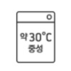
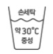
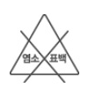
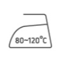

옷 정리 & 관리하기
1. 옷 정리의 기본 원칙
1.1 깨끗한 옷과 더러운 옷 나누기
입은 옷은 바로 빨래통으로! 아직 깨끗한 옷은 통풍 잘 되는 곳에 잠시 보관 후 다시 입을지 결정해요.
1.2 자주 입는 옷과 가끔 입는 옷 나누기
교복이나 평상복처럼 자주 입는 옷은 손이 잘 닿는 곳에, 특별한 날 입는 옷은 위쪽이나 안쪽에 보관하세요.
1.3 계절에 맞는 옷만 앞에 두기
현재 계절 옷만 꺼내기 쉬운 곳에 두고, 다른 계절 옷은 따로 보관하면 옷 찾기가 훨씬 수월해져요.
1.4 옷을 예쁘게 보관하기
니트류는 접어서 보관하고, 셔츠처럼 구김이 잘 가는 옷은 옷걸이에 걸어 모양을 유지해주세요.
1.5 비슷한 옷끼리 모아두기
상의는 상의끼리, 하의는 하의끼리! 색깔별로 정리하는 것도 좋은 방법이에요. 규칙을 정해 꾸준히 정리하는 것이 중요합니다.
1.6 안 입는 옷 정리하기
1년 이상 입지 않은 옷은 부모님과 상의하여 나눔 하거나 정리해 옷장에 공간을 만들어주세요.
1.7 쉽게 정리할 수 있게 만들기
너무 복잡하게 정리하면 힘들어요. 여러분이 쉽게 옷을 꺼내고 다시 넣을 수 있는 방법으로 정리하세요.
1.8 입은 옷은 제자리에 두기
가장 중요한 약속! 벗은 옷은 바로 정해진 자리에 두는 습관을 들이면 옷장이 항상 깔끔하게 유지됩니다.
2. 날씨와 기후에 따른 옷 관리
2.1 깨끗해진 상태로 보관하기
계절이 바뀌어 옷을 보관할 때는 꼭 깨끗하게 세탁하고 완전히 말려서 넣어야 얼룩이나 냄새를 방지할 수 있어요.
2.2 방충제와 방습제 넣기
습한 여름철 벌레와 습기를 막기 위해 방충제와 방습제를 함께 사용해요. 반드시 어른의 도움을 받으세요!
2.3 일 년 내내 입을 옷 관리
가디건, 청바지 등 계절에 상관없이 입는 옷들은 항상 꺼내기 쉬운 곳에 따로 보관하는 것이 좋습니다.
2.4 장마철 관리
옷장 문을 가끔 열어 환기하고 제습제를 넣어 곰팡이를 예방하세요. 젖은 옷은 절대 바로 넣지 마세요.
2.5 미세먼지가 많은 날 관리
외출복은 먼지를 잘 털어낸 후 옷장에 보관하고, 실내복과 구분해서 관리하는 것이 위생적입니다.
3. 똑똑한 정리 방법
3.1 공간을 잘 활용하는 방법
- 작은 상자나 칸막이를 사용해 양말, 속옷 등을 정리하면 찾기 쉽고 깔끔해요.
- 옷걸이 방향을 하나로 통일하면 보기에도 좋고 공간 활용도도 높아져요.
3.2 옷을 잘 관리하는 방법
- 세탁소 비닐은 습기가 찰 수 있으니 벗겨서 보관하세요.
- 가죽 제품은 모양 유지를 위해 내부에 부드러운 천이나 종이를 채워두세요.
- 특별한 옷은 천 커버를 씌워 먼지로부터 보호해주세요.
- 옷이 손상되면 바로 어른께 말씀드려 수선해서 오래 입어요.
3.3 대표적인 세탁 라벨 알아보기

물세탁 가능
세탁기 모양은 물세탁이 가능하다는 뜻이에요. 안의 숫자는 물의 온도를 나타내요.

손세탁
세탁기 모양에 손이 담겨 있으면, 세탁기 대신 손으로 부드럽게 빨아야 해요.

염소, 산소 표백 가능
세모 모양은 표백제를 사용할 수 있다는 표시예요. 세모 모양에 x가 되어 있으면 표백제를 쓸 수 없어요.

기계 건조 가능
네모 안의 동그라미는 건조기를 사용할 수 있다는 뜻이에요.

다림질 가능
다리미 모양은 다림질이 가능하다는 표시! 안의 점은 온도를 나타내요. (점이 많을수록 높은 온도)
4. 주의해야 할 것들
4.1 안전하게 정리하기
- 방충제, 제습제는 절대 만지지 말고 어른께 부탁드려요.
- 만약 방충제가 손에 닿았다면 즉시 비누로 깨끗이 씻으세요.
- 다리미는 매우 뜨거워요. 반드시 어른께 부탁드려요.
- 높은 곳에 무거운 것을 두면 위험해요.
- 뾰족한 옷걸이를 사용할 때는 다치지 않게 조심하세요.
4.2 건강을 위한 주의점
- 알레르기가 있다면 방충제 선택 시 부모님께 꼭 말씀드리세요.
- 옷장에서 곰팡이 냄새가 나면 바로 어른에게 알려주세요.
- 정리할 때 먼지가 많이 날리면 마스크를 착용하는 것이 좋아요.